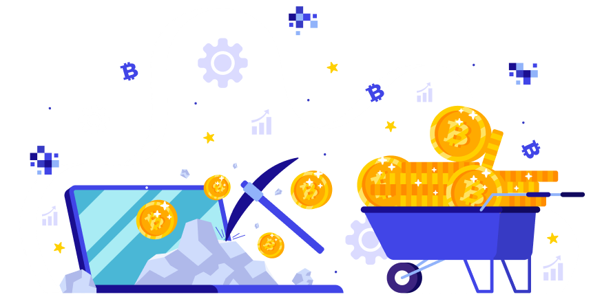

Welcome to the Crypto Project/Token Development page at Xettle! We specialize in helping businesses and individuals navigate the exciting world of cryptocurrency by providing comprehensive crypto project and token development services. Whether you're looking to launch your own cryptocurrency or develop a blockchain-based project, we have the expertise to turn your vision into reality.
Crypto Project/Token Development refers to the process of creating and launching a cryptocurrency or blockchain-based token. These digital tokens can serve various purposes within the broader crypto ecosystem and are often used in Initial Coin Offerings (ICOs), Security Token Offerings (STOs), or as part of decentralized applications (DApps).
A cryptocurrency is a digital or virtual form of currency that uses cryptography for security. It operates on a decentralized ledger technology called blockchain, which ensures transparency and immutability of transactions. Cryptocurrencies like Bitcoin and Ethereum are examples of widely known cryptocurrencies.
A token represents a digital asset or unit of value issued and managed on a blockchain. Tokens can have various use cases, such as representing ownership of assets, access to services, voting rights, or loyalty rewards.
A crypto project encompasses any venture within the realm of cryptocurrencies or blockchain technology. This can entail a wide range of activities, such as creating a new cryptocurrency, launching a blockchain network, developing decentralized applications (DApps), or pioneering innovative blockchain solutions across diverse industries like finance, supply chain, healthcare, and more. Token development is an integral part of many crypto projects. It involves the meticulous process of conceiving and crafting a blockchain-based token with specific attributes and functionalities. This includes determining the token's purpose, defining its technical specifications, and, if needed, coding smart contracts to manage and govern the token's behavior on a blockchain. Tokens can be created for various purposes, including fundraising through Initial Coin Offerings (ICOs), facilitating seamless transactions within DApps, or representing ownership of tangible or digital assets.
Ready to elevate your crypto trading experience with our state-of-the-art platform? Contact us today and let’s make it happen.